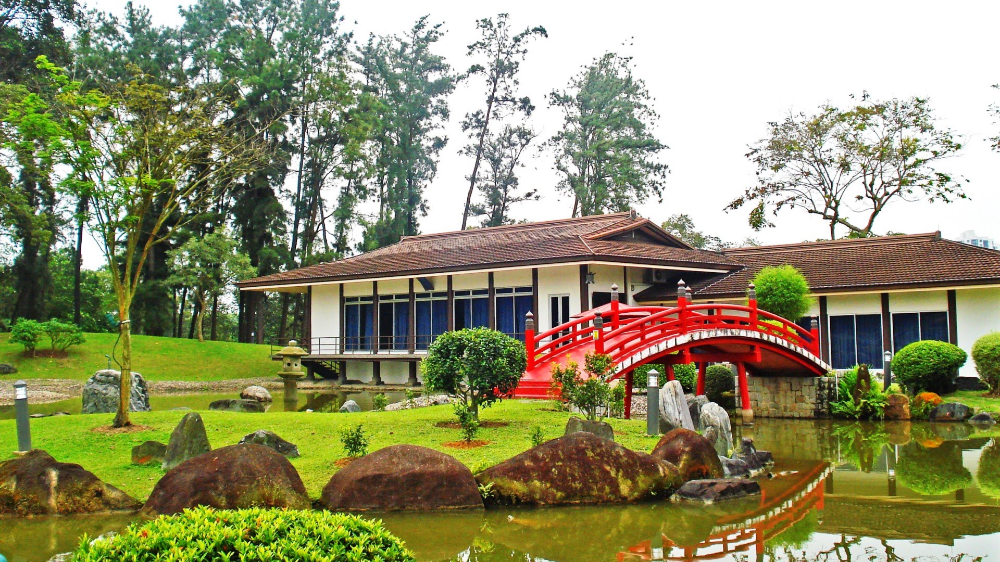
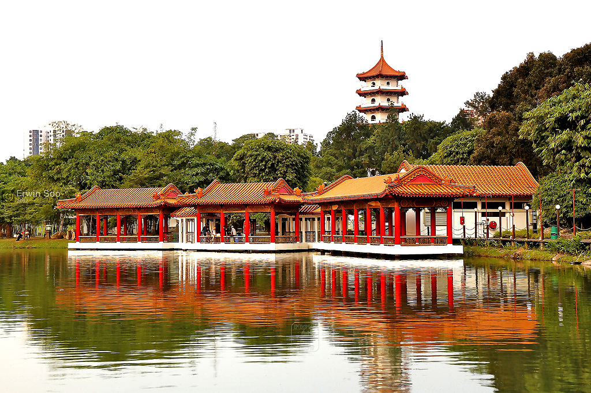
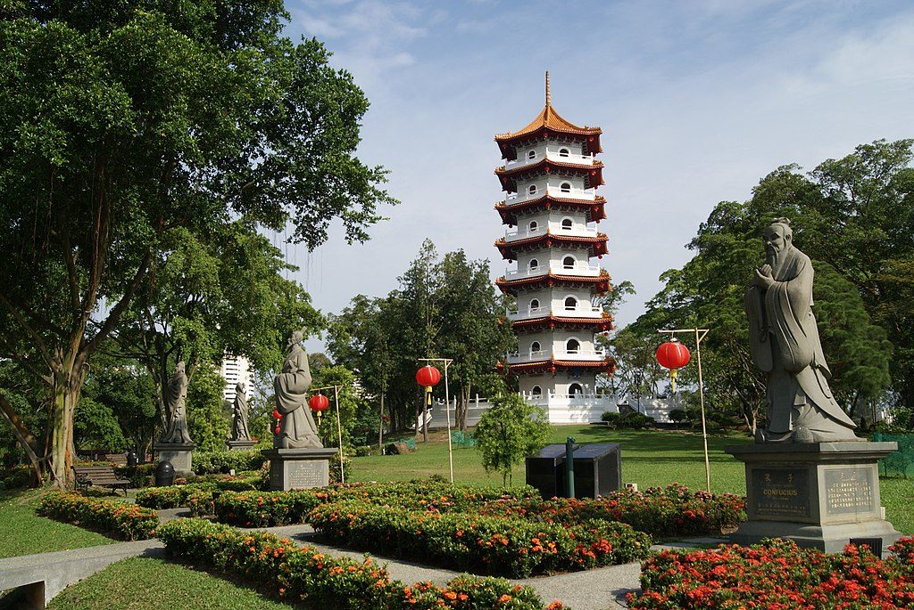
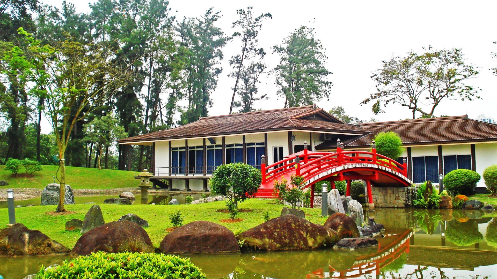
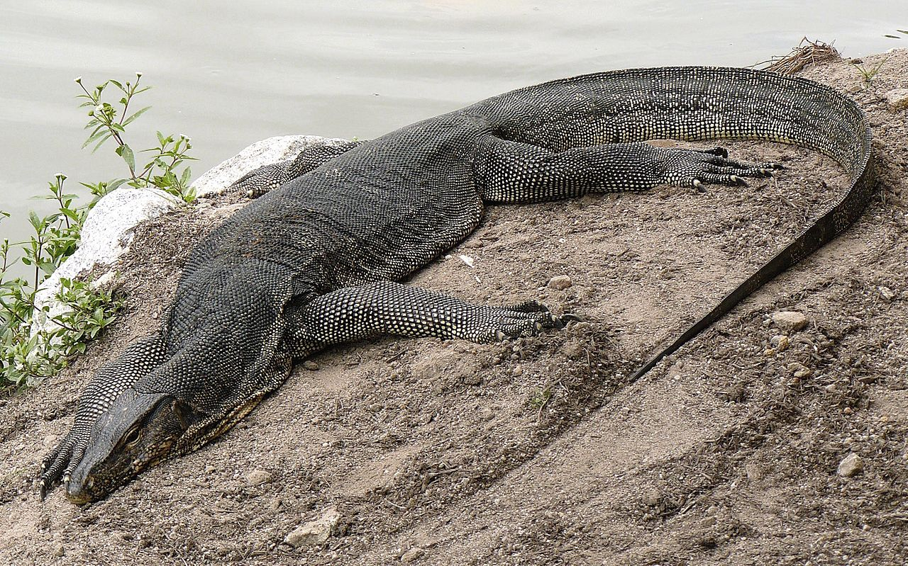
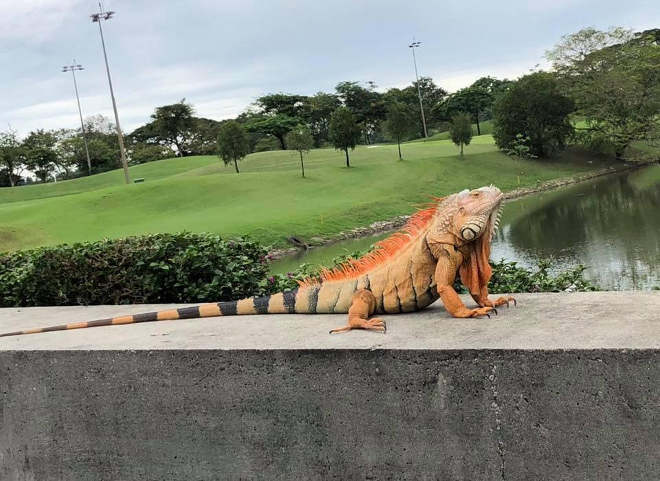
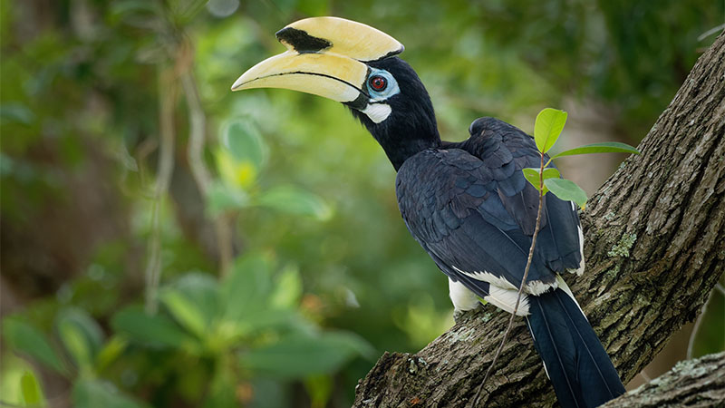

Transport yourself to Ancient Japan as you journey through here

Experience a tranquility in the gardens containing a lake within a lake
A gateway to another universe!
An mixture of culture: Chinese & Japanese Garden. A lake blooming with life and activities surrounding it.
Gardens Surrounding the Lake
Surrounding the
Jurong Lake
, experience a chance to be close to nature at the comfort of civilisation. The amount of things that can be done within the gardens is endless!
Nested in the western part of Singapore, the gardens is one of the growing jewel of our generation!
Constructed in 1975, Chinese gardening art has been the inspiration to our design:
- Just a
5 - 10 min stroll from Chinese Garden MRT, this garden offers you a gateway to another world.
- Integrating
northen Chinese imperials style of architecture with the natural beauty of Jurong Lake to give you a wonderful experience.
The stunning Twin Pagodas with the sunset background
Admire the beauty from the comfort of Chinese Pavillions
Climb up the 7-Storey Pagoda to have a bird's eye view of Jurong Lake
Located just a stone's throw away from Chinese Garden, another Jewel is waiting to be discovered!:
- The
Japanese Garden offers you peace and calmness as you journey through it.
Bring out your
inner peace and meditative state while you admire our wide variety of flora and fauna alongside the beautifully sculpted landscape
Connecting Chinese and Japanese gardens through this bridge, representing the cohesiveness of Chinese and Japanese Culture.

Transport yourself to Ancient Japan as you journey through here
Experience a tranquility in the gardens containing
a lake within a lake
For list of things to do, click here.
Rasau Walk
Opening Hours:
24/7
Take a stroll along our 300m broadwalk that meanders through floras at the edge of Jurong Lake. Witness the beauty unfolds as you enjoy the beautiful scenery.


Floating Wetlands
Opening Hours:
24/7
Stroll through the largest man-made floating wetland in Singapore for stunning views of Jurong Lake. If you are lucky enough, you'll see some interesting characters!


Clusia Cove
Opening Hours:
8.00 am - 7.00pm, Closed on Mondays except Public Holidays
Re-live your inner child in you as you have fun at our Clusia Cove water playground.Experience as much nature as you can through the beautiful creation.

Otters
Monitor Lizard
Iguana
Hornbill
And Many More!
Click here for more information.